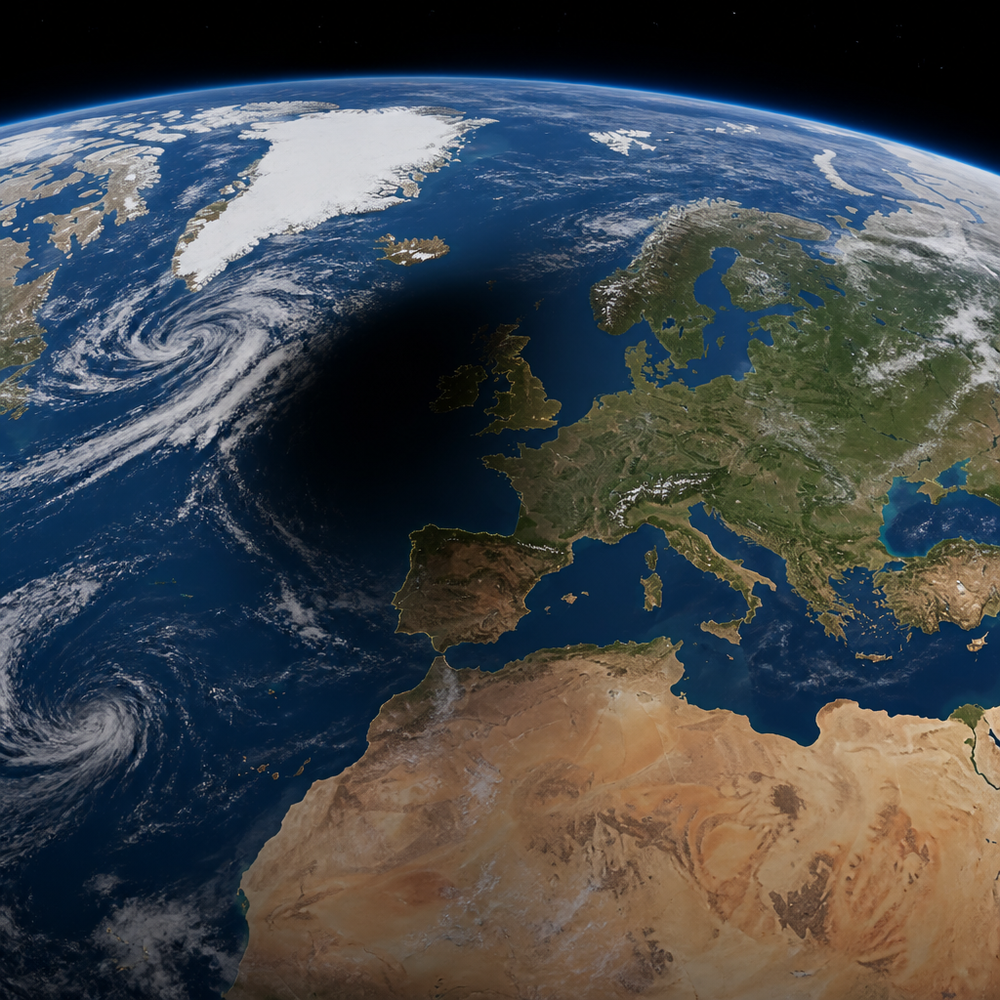
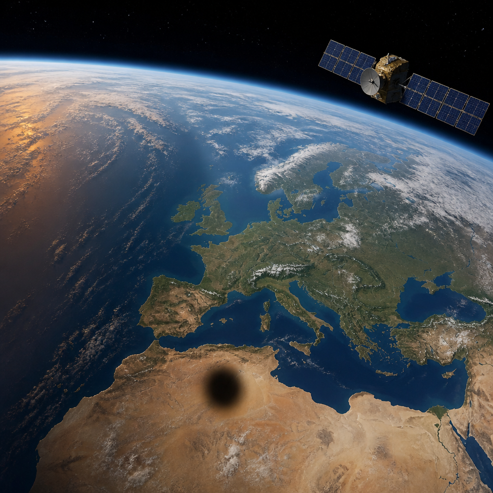

Il satellite meteorologico ha seguito dallo spazio il percorso della totalità e l’arrivo del crepuscolo sull’Europa.
Per alcuni minuti, tra le 20:26 e le 20:34 dell’Europa centrale, una parte della penisola Iberica ha vissuto un’eclissi totale di Sole. L’evento è stato osservato anche da molto lontano: il satellite MTG-I1 ha ripreso l’ombra scura della Luna mentre scorreva sulla superficie terrestre, fino a incontrare l’ombra del crepuscolo che avanzava con la sera sull’Europa.
L’animazione diffusa dall’Agenzia spaziale europea è composta da immagini del satellite Meteosat Third Generation Imager, chiamato MTG-I1. Nella sequenza si distingue il movimento dell’ombra lunare, cioè la zona della Terra dalla quale il Sole viene completamente nascosto. È il percorso della totalità: la fascia in cui l’eclissi raggiunge la sua fase massima.
Dalla sua posizione, MTG-I1 ha potuto seguire l’ombra della Luna prima sulla Groenlandia e sull’Islanda, poi su una piccola parte del Portogallo nord-orientale e infine sulla Spagna. Il satellite si trova in orbita geostazionaria, un’orbita nella quale resta rivolto continuamente verso la stessa area della Terra. I suoi strumenti osservano Europa e Africa settentrionale da una distanza di 36 000 chilometri sopra la superficie terrestre.
Questa prospettiva rende visibile un aspetto che da terra non si può cogliere nello stesso modo: non soltanto l’eclissi osservata in un singolo luogo, ma la sua ombra che procede sul pianeta. Nelle immagini, la macchia scura della totalità si avvicina alla fascia dell’oscurità serale. L’incontro fra i due fenomeni racconta una transizione molto rapida: da una parte l’ombra prodotta dalla Luna, dall’altra il naturale avanzamento della notte.

Un’eclissi totale di Sole avviene quando la Luna passa fra il Sole e la Terra e copre per un breve periodo il disco solare. Nella fase di totalità, attorno alla Luna diventa visibile un alone luminoso: è la corona del Sole, la sua parte esterna luminosa. Sulla terraferma europea, questa fase è durata soltanto pochi minuti.
L’eclissi parziale, invece, è stata visibile su un’area molto più ampia. In questo caso la Luna copre solo una parte del disco del Sole. Secondo l’Agenzia spaziale europea, il fenomeno è stato osservabile dal Canada settentrionale ai Paesi nordici e alla costa occidentale dell’Africa, fino alla Sierra Leone e alla Liberia.
Sono previste altre eclissi solari da qui al 2028, e l’Agenzia spaziale europea segnala che seguiranno aggiornamenti dedicati alle sue attività di osservazione. Nel frattempo, la missione MTG si prepara a collocare in orbita il suo terzo satellite. MTG-I2 è programmato per il lancio il 27 agosto 2026, a bordo del volo VA270 con un lanciatore Ariane 6, dallo spazioporto europeo nella Guyana francese.
MTG-I1 ha osservato dall’orbita geostazionaria l’ombra della Luna durante l’eclissi totale di Sole. Il suo percorso ha interessato Groenlandia, Islanda, una piccola parte del Portogallo nord-orientale e la Spagna, mentre sull’Europa avanzava anche il crepuscolo.
Questo articolo l'hai letto sul blog di Meteo Radar: un'app che ti mostra da dove vengono i numeri, invece di limitarsi a dartelo. E ogni mattina ne trovi uno nuovo come questo.